概述
仓库
存放代码的目录，分为本地仓库和远程仓库，本地和远程可以通过 git remote add 建立关联。
本地仓库有三大分区：
- 工作区 (Working Directory): 是我们编辑代码的地方
- 暂存区 (Stage or Index): 数据暂时存放的区域，可以在工作区和版本库之间进行数据的交流
- 版本库 (Commit History): 存放已经提交的数据，push 的时候就是把这个区域的数据推送到远程仓库
分支
git 中的分支本质上是一个指向某个 commit 的指针。
文件的生命周期
对于 git 仓库里的每一个文件（除了 .git 目录和被 .gitignore 忽略的文件），有如下几种状态：
- Untracked 未跟踪
- Unmodified 未修改
- Modified 已修改
- Staged 暂存区
常用操作
1 | git init # 在当前目录下初始化一个本地 git 仓库 |
高级操作
1 | git branch # 查看本地分支 |
如下实例中，蓝色是版本库，绿色是暂存区，红色是工作区：
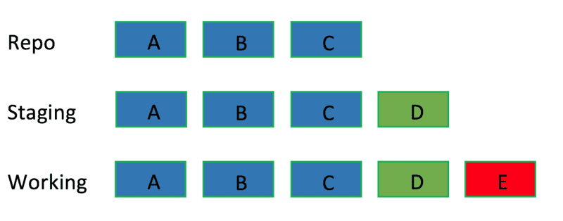git reset有三个选项：
- soft就是只动repo
- mixed就是动repo还有staging(这个是默认参数)
- hard就是动repo还有staging还有working
soft：只修改版本库repo
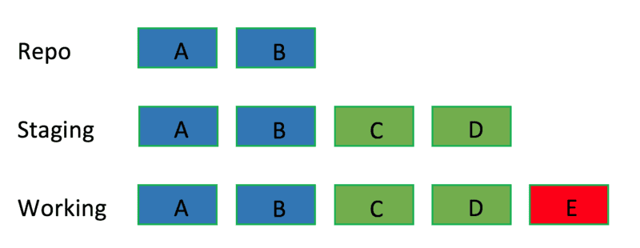1
git reset --soft <B commit>
mixed：修改版本库和暂存区
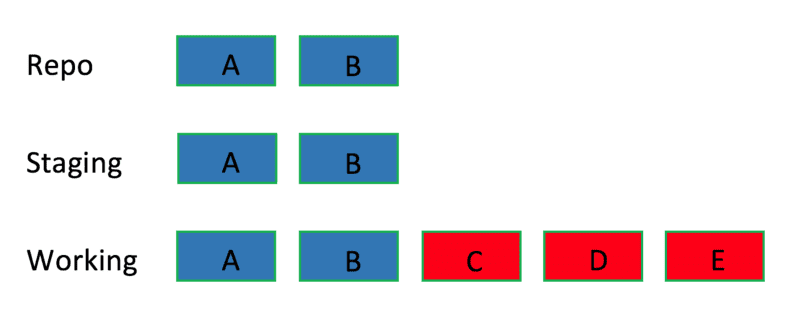1
git reset --mixed <B commit>
hard：修改版本库、暂存区和工作区
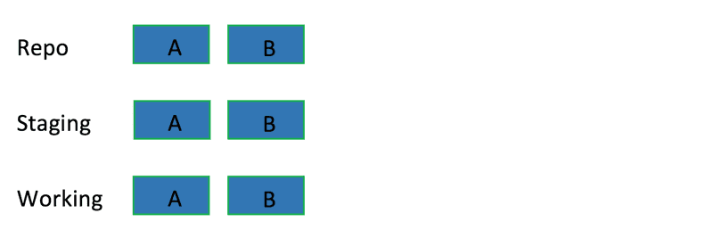1
git reset --hard <B commit>
冲突解决
当发生冲突的时候，冲突的文件中会出现以下格式的内容。
解决冲突的时候，可以选择保留当前修改，保留另一个分支的修改，或是两个都不保留，重新编辑。
解决冲突的时候既要解决文本冲突，也要注意逻辑冲突。当冲突解决完成后，应该将当前文件加入暂存区，并执行对应命令加上 –continue 参数。
1 | <<<<<<< HEAD |
.gitignore
文件 .gitignore 的格式规范如下：
- 所有空行或者以 ＃ 开头的行都会被 Git 忽略。
- 可以使用标准的 glob 模式匹配。
- 匹配模式可以以（/）开头防止递归。
- 匹配模式可以以（/）结尾指定目录。
- 要忽略指定模式以外的文件或目录，可以在模式前加上惊叹号（!）取反。
1 | no .a files |
Merge & Rebase
- Merge: 合并两个分支
- Rebase: 改变分支的 base commit
这两种操作都可以合并分支，rebase 的优势在于可以使 commit history 的线性程度更高。线性程度高的好处在于，浏览历史的时候更整洁，不容易碰到分叉，分叉部分的代码差异可能更大。
1 | git merge <branch> # 把 branch 合并到当前分支 |
rebase黄金准则: 永远不要 rebase 到一个共享的分支，只能 rebase 自己使用的私有分支。
假设我们有如下图一所示仓库，该仓库有master和develop两个分支，且develop是在（3.added merge.txt file）commit处从master拉出来的分支。
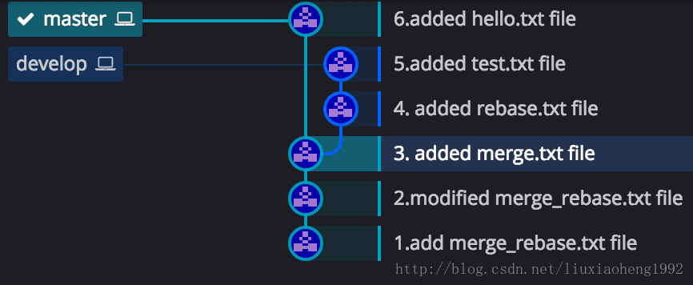merge
假设现在HEAD在（6.added hello.txt file）处，也就是在master分支最近的一次提交处，此时执行git merge develop, 结果如下图所示。
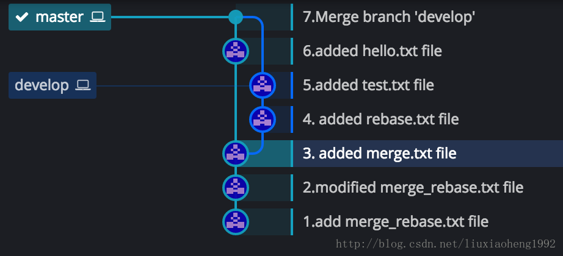工作原理就是：git 会自动根据两个分支的共同祖先即 (3.added merge.txt file)这个 commit 和两个分支的最新提交即 (6.added hello.txt file) 和 (5.added test.txt file) 进行一个三方合并，然后将合并中修改的内容生成一个新的 commit，即图二的(7.Merge branch ‘develop’)。
这是merge的效果，简单来说就合并两个分支并生成一个新的提交。
rebase
假设初始状态也是图一所显示的。两个分支一个master，一个develop，此时HEAD在（6.added hello.txt file）处，现在执行git rebase develop,结果如下图三所示。
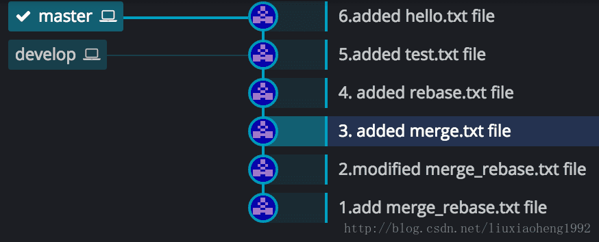在执行git rebase develop之前，HEAD在（6.added hello.txt file）处，当执行rebase操作时，git 会从两个分支的共同祖先 (3.added merge.txt file)开始提取 当前分支（此时是master分支）上的修改，即 （6.added hello.txt file）这个commit，再将 master 分支指向 目标分支的最新提交（此时是develop分支）即（5.added test.txt file） 处，然后将刚刚提取的修改应用到这个最新提交后面。如果提取的修改有多个，那git将依次应用到最新的提交后面，如下两图所示，图四为初始状态，图五为执行rebase后的状态。
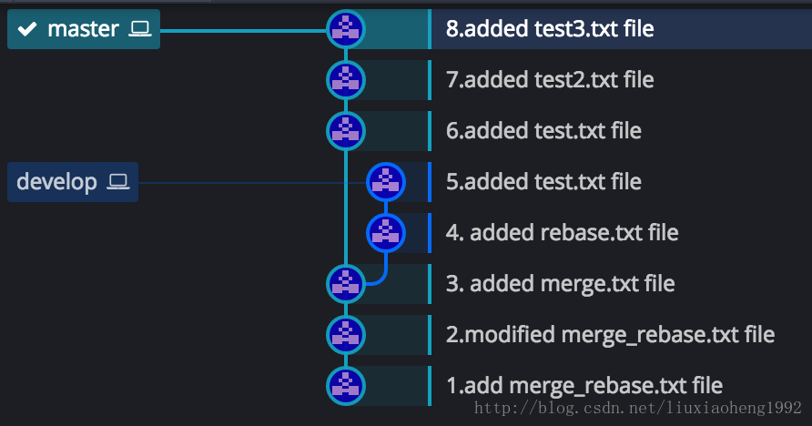
初始状态如下图六所示,和之前一样的是，develop分支也是在 (3.added merge.txt file)处从master分支拉取develop分支。不一样的是两个分支各个commit的时间不同，之前develop分支的4和5commit在master分支3之后6之前，现在是develop分支的4提交早于master分支的5提交，develop分支的6提交晚于master的5提交早于master的7提交。
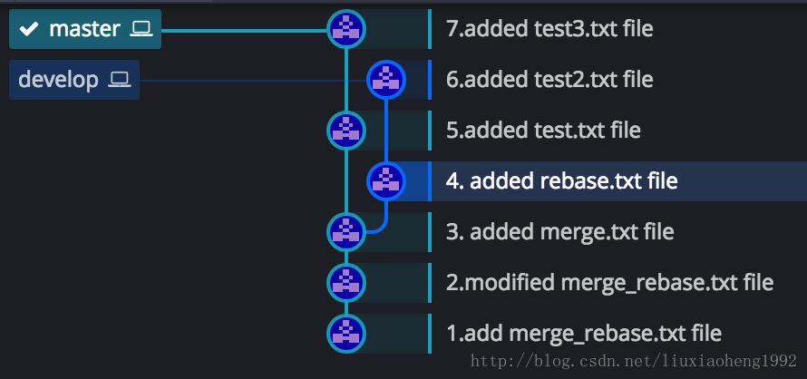在上图情况下，在master分支的7commit处，执行git merge develop，结果如下图七所示：
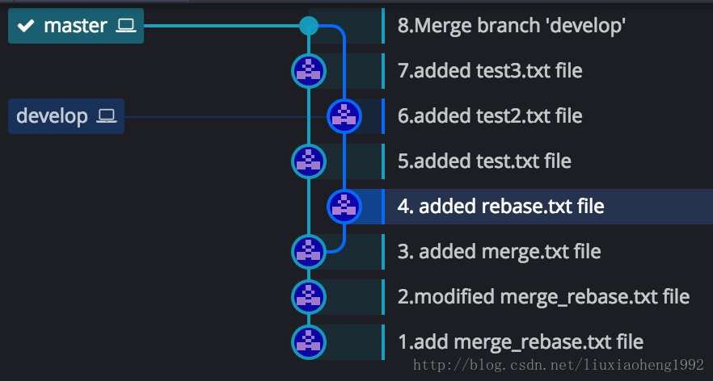执行git rebase develop，结果如下图八所示：
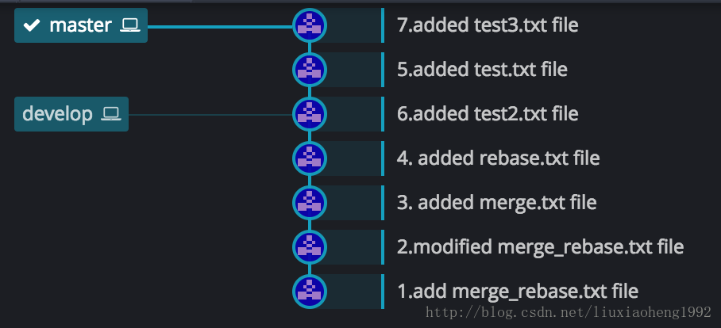- 可以看出merge结果能够体现出时间线，但是rebase会打乱时间线。
- 而rebase看起来简洁，但是merge看起来不太简洁。
- 最终结果是都把代码合起来了，所以具体怎么使用这两个命令看项目需要。
还有一点说明的是，在项目中经常使用git pull来拉取代码，git pull相当于是git fetch + git merge，如果此时运行git pull -r，也就是git pull –rebase，相当于git fetch + git rebase
撤销rebase
当我们在本地的develop分支开发完成后，commit修改的内容，然后将origin/develop分支rebase到本地的develop分支，准备push代码的时候发现origin/develop分支的内容有问题，需要回退本地分支到rebase之前的状态（也可以撤销rebase其他本地分支的操作），首先执行命令：git reflog。输出如下：
1 | git reflog |
解释一下上述输出：
- HEAD@{3}：提交本次内容
- HEAD@{2}：开始rebase，首先checkout到origin/develop分支
- HEAD@{1}：将origin/develop分支上的变动rebase到本地develop分支
- HEAD@{0}：rebase结束
如果要撤销本地rebase操作，只需要执行：
1 | git reset --hard HEAD@{3} |
即可成功撤销rebase操作，回退到之前commit的状态。
detached HEAD
首先看看下面这种常规的commit情况：
1 | HEAD (refers to branch 'master') |
此时再执行下述操作：
1 | edit; git add; git commit |
运行命令git checkout master后会checkout到master的最新commit上，接下来运行下述命令：
1 | git checkout v2.0 # 或 git checkout master^^ |
现在head已经指向commit b，这就是所谓的dedatched head状态。从这里可以看出，head是当前index的状态，而不是当前分支（的最近commit节点）。这仅仅意味着head指向某个特定的commit点，而不是指向每一个特定的分支（的顶端节点）。如果我们此时提交一个commit：
1 | edit; git add; git commit |
注意，此时产生了一个新的提交点，但是它只能被head索引到，不属于任何一个分支。当然，我们还可以给在这个“无名分支”的基础上继续提交。实际上，我们可以进行任何git的常规操作。但是，当我们运行git checkout master后：
1 | git checkout master |
此时，commit e已经处于无法被索引到的状态。最终e将被git的默认回收机制所回收，除非在它们被回收之前创建一个指向它们的索引。如果我们没有从commit e离开的话，可以这样创建一个指向e的索引：
1 | git checkout -b develop # 创建一个develop分支，指向e，接着更新head指向分支develop，此时不再处在detached head的状态 |
patch
概述
如果一个软件有了新版本，我们可以完整地下载新版本的代码进行编译安装。然而，像Linux Kernel这样的大型项目，代码即使压缩，也超过70MB，每次全新下载是有相当大的代价的。然而，每次更新变动的代码可能不超过1MB，因此，我们只要能够有两个版本代码的diff的数据，应该就可以以极低的代价更新程序了。
git提供了两种简单的patch方案。一是用git diff生成的标准patch，二是git format-patch生成的Git专用Patch。
git diff生成的标准patch
- 最初在master(或别的分支上)
- 新建分支修改bug： git checkout -b fix
- 在fix分支上，提交修改内容： git commit -m “fix a bug”
- 与master分支对比产生patch: git diff > patch
- 使用git apply命令，在一条干净的分支上应用patch: git checkout master —> git checkout -b PATCH — > git apply –check patch —–> (补丁patch可以加入的话) git apply patch —> git commit -m “apply patch”
- 切换到master上合并PATCH分支：git checkout master —-> git merge PATCH
注意：无论多少个文件、多少次commit的diff，都只会产生一个patch。
git format-patch生成的git专用补丁
- 最初在master(或别的分支上)
- 新建分支修改bug： git checkout -b fix
- 在fix分支上，提交修改内容： git commit -m “fix a bug”
- 将此次commit后的fix分支内容与master对比，根据commit msg生成一个patch: git format-patch -M master —->生成0001-fix-a-bug.patch
- 使用git am命令，在一条干净的分支上应用patch: git checkout master —> git checkout -b PATCH —> git am 0001-fix-a-bug.patch —> git commit -m “apply patch”
- 切换到master上合并PATCH分支：git checkout master —-> git merge PATCH
注意：每次commit，都只会产生对应的一个patch。
- git am时出错：
.git/rebase-apply still exists but mbox given
git am –abort（该命令将git的状态恢复到之前状态就可以继续提交patch了） - 打补丁
patch -p1 < my.patch - 取消补丁
patch -R -p1 < my.patch
创建patch 文件的常用命令行
- 某次提交（含）之前的几次提交：
git format-patch 【commit sha1 id】-n
n指从sha1 id对应的commit开始算起n个提交。
eg：git format-patch 2a2fb4539925bfa4a141fe492d9828d030f7c8a8 -2 - 某个提交的patch：
git format-patch 【commit sha1 id】 -1
eg：git format-patch 2a2fb4539925bfa4a141fe492d9828d030f7c8a8 -1 - 某两次提交之间的所有patch:
git format-patch 【commit sha1 id】..【commit sha1 id】
eg：git format-patch 2a2fb4539925bfa4a141fe492d9828d030f7c8a8..89aebfcc73bdac8054be1a242598610d8ed5f3c8
创建diff文件的常用方法
1 | git diff 【commit sha1 id】 【commit sha1 id】 > 【diff文件名】 |
两种patch的比较
- 兼容性：很明显，git diff生成的Patch兼容性强。如果你在修改的代码的官方版本库不是Git管理的版本库，那么你必须使用git diff生成的patch才能让你的代码被项目的维护人接受。
- 除错功能：对于git diff生成的patch，你可以用git apply –check 查看补丁是否能够干净顺利地应用到当前分支中；如果git format-patch 生成的补丁不能打到当前分支，git am会给出提示，并协助你完成打补丁工作，你也可以使用git am -3进行三方合并。从这一点上看，两者除错功能都很强。
- 版本库信息：由于git format-patch生成的补丁中含有这个补丁开发者的名字，因此在应用补丁时，这个名字会被记录进版本库，显然，这样做是恰当的。因此，目前使用Git的开源社区往往建议使用format-patch生成补丁。
submodule
- 添加：
git submodule add repo_address path，path可省略 - 更新：
git submodule update - 初始化/更新：
git submodule update --init --recursive - 删除：首先，要在
.gitmodules文件中删除相应配置信息。然后，执行git rm –cached命令将子模块所在的文件从git中删除 - clone带有submodule的项目：
git clone --recurse-submodules address
Git LFS
Git 在 clone 过程中会将仓库的整个历史记录传输到客户端，对于包涵大文件（尤其是经常被修改的大文件）的项目，初始克隆需要大量时间，因为客户端会下载每个文件的每个版本。
Git LFS(Large File Storage) 是 Git 的一个扩展，用于实现 Git 对大文件的支持。它通过延迟下载大文件的相关版本来减少大文件在仓库中的影响，大文件是在 checkout 过程中下载的，而不在 clone 或 fetch 过程中下载, Git LFS 通过将仓库中的大文件替换为小指针文件来做到这一点。使用时用户不会注意到这些指针文件，因为它们是由 Git LFS 自动处理的：
- 当 add 一个文件到仓库时，Git LFS 用一个指针替换其内容，并将文件内容存储在本地 Git LFS 缓存中(缓存位于
.git/lfs/objects目录中)。 - 当 push 新的提交到服务器时，新提交引用的所有 Git LFS 文件都会从本地 Git LFS 缓存传输到绑定到 Git 仓库的远程 Git LFS 存储(即 lfs 文件内容会直接从本地 Git LFS 缓存传输到远程 Git LFS 存储服务器)。
- 当 checkout 一个包含 Git LFS 指针的提交时，指针文件将替换为本地 Git LFS 缓存中的文件，或者从远端 Git LFS 存储区下载。
git clone 和 git pull 将明显更快，因为只下载实际 checkout 的提交所引用的大文件版本，而不是曾经存在过的文件的每一个版本。使用 Git LFS 需要一个支持 Git LFS 的托管服务器如 Bitbucket Cloud 或 Bitbucket Server, 另外 GitHub 和 GitLab 也都支持 Git LFS。
一些用法
1 | 安装 git-lfs |